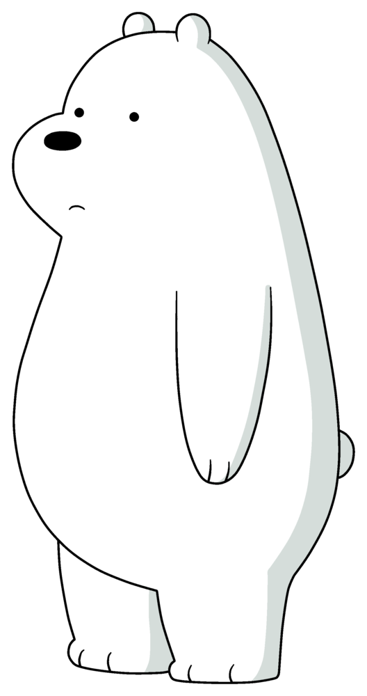

Ice Bear
(diisi oleh Demetri Martin) adalah beruang kutub dan adik termuda. Ice Bear sering tenang dan jarang berbicara. Ketika dia melakukannya, dia berbicara sebagian besar pada orang ketiga dan kebanyakan mengatakan namanya terlebih dahulu sebelum melakukan hal lain. Dia belajar berbicara lebih jauh daripada kedua saudara laki-lakinya, seperti yang diungkapkan di episode "The Island". Dia multibahasa, telah terbukti bisa berbicara bahasa Korea, Prancis, Jepang (di episode "Losing Ice"), dan bahasa Rusia dengan lancar. Ice Bear juga bisa berbicara dengan burung merpati di episode "Our Stuff." Dia juga seorang koki terampil, penari, pemain piano, pemula di bidang robotika, pemain sandiwara (di episode "My Clique"; terungkap di episode "The Island" yang dia belajar berbicara dengan sangat lambat, dan awalnya menggunakan keahliannya untuk berkomunikasi), tukang las, penyair (yang dia tulis dalam bahasa Prancis) dan seorang seniman bela diri campuran (dikutip sebagai jiu-jitsu Brasil di episode "Chloe", namun keahliannya mendekati taekwondo dan judo dengan keterampilan di nunchaku, shuriken, dan pedang). Ice adalah yang paling tersusun dari saudaranya, selalu mempertahankan "sikap sejuk-dingin" bahkan dalam situasi yang paling canggung dan memalukan. Seperti yang terlihat pada episode "Losing Ice", saudaranya sering menganggapnya biasa dan tidak menghargai semua masakan dan pembersihan yang dilakukannya, meskipun pada akhirnya mereka menyadari kesalahan dengan cara mereka. Ice Bear tidur di kulkas dengan kapak api yang bisa dia gunakan dengan kedua tangan. Hal itu terungkap dalam episode "Yuri and the Bear" bahwa Ice Bear dibesarkan oleh seorang pria Rusia bernama Yuri. Begitulah cara dia belajar bahasa Rusia, dan karena Yuri berbicara secara eksklusif pada orang ketiga, ini kemungkinan besar bagaimana Ice Bear mendapatkan kebiasaan itu. Dia mendapatkan akomodasi dengan belajar memotong kayu, memasak salmon, membaca peta, mempelajari kalkulus, merajut, bermain Uno dengan kartu standar dan berbicara bahasa Rusia dan Inggris, namun terpotong saat Yuri membiarkannya pergi menyelamatkannya dari pemburu, dan Ice berlayar ke Wilayah Teluk. Ketiga beruang itu sangat tangkas.